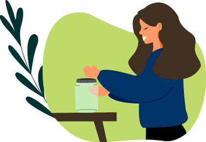

Se trata de un movimiento o filosofía de vida que tiene como objetivo reducir al máximo los residuos y la basura que generamos cotidianamente.
De esta manera, no sólo reducimos nuestra huella, si no que además, nos permite vivir una vida más rica en momentos y experiencias que nos hacen sentir lo verdaderamente importante.

El origen
Fue a mediados de los ‘90 y principios de los 2000 cuando diferentes asociaciones comenzaron a adoptar medidas e impulsar proyectos que nos llevaran al objetivo de cero residuos.
A nivel individual, una de las mayores activistas de este movimiento es Bea Johnson. Autora del blog Zero Waste Home, nos da consejos sobre cómo podemos reducir los residuos que generamos en casa.
Ella aumentó las 3R (Reducir, Reutilizar y Reciclar) a cinco: Refuse, Reduce, Reuse, Recycle and Rot.
Refuse (rechazar): nos invita a negarnos a usar muchos de los elementos desechables que nos venden.
Rot (descomponer): hace referencia a la posibilidad compostar nuestros desechos orgánicos para reutilizarlos y que vuelvan a la tierra.
¿Cómo aplicar el Zero Waste?
Acá te dejamos un par de consejos para que empieces a aplicarlo en tu vida y que generes la menor cantidad de residuos en tu casa. Empieza poco a poco y sin agobiarte, con lo que te sea más sencillo. Después podrás ir buscando otras alternativas para acercarte a este objetivo.
Una de las cosas más sencillas de hacer para acabar con los plásticos abandonados en el medio ambiente es dejar de usar bolsas de plástico y empezar a usar las de papel, cartón o tela.
Hay muchos productos que tienen gran cantidad de plástico y cartones. ¡Compra productos a granel! Puedes acceder a ellos en supermercados orgánicos y de productos ecológicos.
En todo lo que te sea posible, opta por hacerlo vos mismo. Ahorrás dinero, salud y ayudarás a mejorar el ambiente. Podés hacer jabones, productos de limpieza, detergente y ¡hasta tus propios perfumes!
Te recomendamos tanto comprar ropa de segunda mano en buen estado, como dar la tuya a quien pueda necesitarla. Si tu ropa ya no está en estado aceptable, la podés usar como trapos de limpieza.
Relacionado con lo anterior, aparte de reutilizar pensando de qué otras formas se puede utilizar un material o reparando lo que haga falta, también reciclá el resto de los residuos generados.
Usá siempre pastillas de jabón en vez de jabón, shampoo o detergente líquido. En su versión líquida gastamos más de lo que necesitamos sin darnos cuenta (además del envase en plástico).